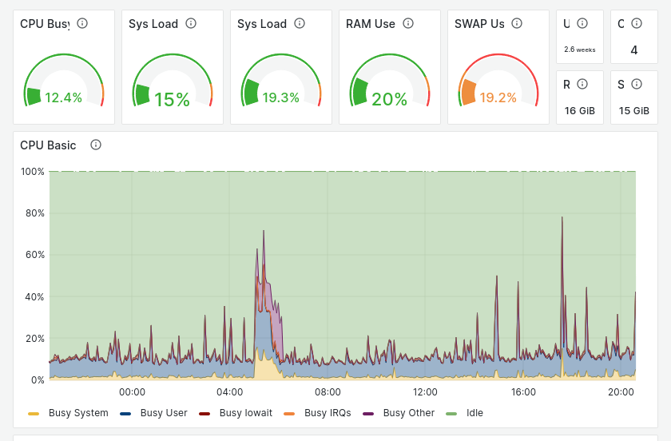

Dashboard#

The CLUB1 server has a member-accessible dashboard at https://dashboard.club1.fr. This is an instance of Prometheus+Grafana, connected to the LDAP directory.
Software#
- Prometheus#
Time series database primarily designed for the monitoring of servers.
Prometheus is responsible for collecting information at regular intervals on the various components we want to monitor. It keeps a history of these data (15 days at CLUB1) and allows them to be retrieved using queries. — Wikipedia, Sources
- Grafana#
Web dashboard software for displaying statistics and graphics and sending alerts from a time series database.
It is able to connect to different data sources, with the most common, Prometheus being also the one used at CLUB1. — Wikipedia, Sources